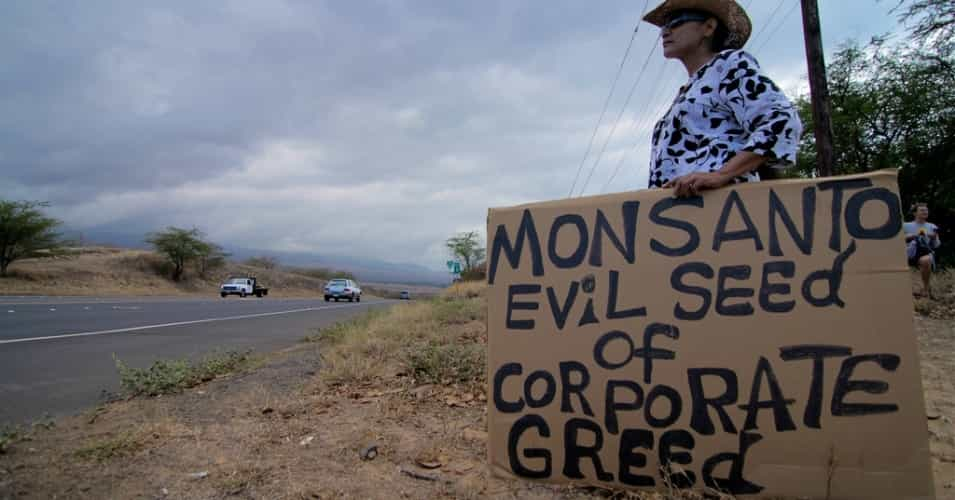
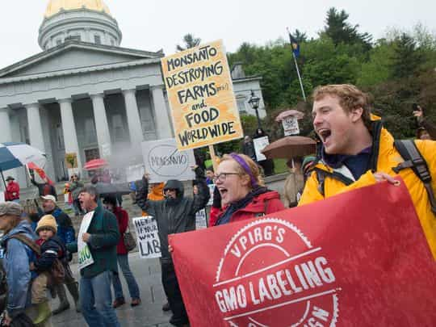
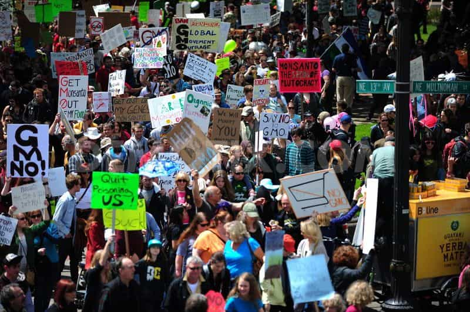
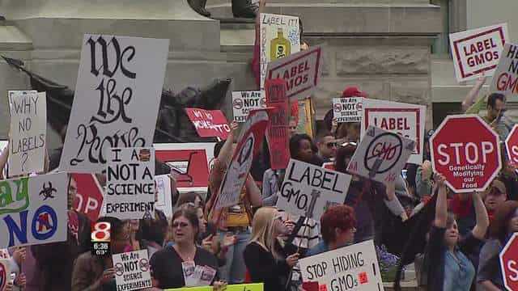

< < < Back
Bayer Acquires Most Evil Corporation In The World, Now Has Monopoly On Food Market – Return Of Kings
Bayer, the pharmaceutical giant that rakes in roughly $47 billion dollars a year, recently acquired Monsanto for a whopping $66 billion dollars. My friends, I do not speak frivolously when I say that this could potentially be one of the most devastating acquisitions for human health of this century.
Monsanto is widely known as one of the most evil companies in the world—for reasons which I will soon discuss, however this is not what concerns me. What concerns me is that Monsanto owns a whopping 90% market share on soy and corn, which is used in virtually everything in the US (high fructose corn syrup or soy protein anyone?). Monsanto owns a gigantic 26% share of the seed market as well, which sets them ahead of all other competitors.
Coming in at 19%, Bayer owns the most share of the pesticide market out of anyone. It is not these gigantic market shares, however, that scare me. It is the fact that if one company owns a monopoly in BOTH the seed industry AND the pesticide industry, they could effectively force farmers to grow GMO’s which have been shown to have a plethora of devastating ecological and human health consequences.
Before I delve into the disturbing economic and health-related ramifications of this new acquisition, I would first like to shed some light on the complete lack of ethics that these companies exhibit.
Monsanto: Shadowy Lawsuits Against Small-Time Farmers

Now I’m very aware that a lot of people might think that I’m going on about some sort of hippie bullshit. Believe me, I used to be the same way. If you look at the evidence, however, it is crystal clear that this company has no quandaries about whether or not to financially destroy innocent farmers, ruthlessly pursue unethical legislation, and create ungodly mycotoxins that could potentially serve as the next black plague.
Sound ridiculous? Let me explain.
Monsanto has been genetically engineering crops for decades which, due to their unnatural genes, spread like wildfire. They have an incredible resistance to mold, rain, snow, heat, cold, and… you guessed it, pesticides.
So when you have such a resilient seed, what do you think happens? It naturally spreads all over the place. Whether it’s from animals carrying the seeds on their fur, or through the wind depositing seeds throughout the land, their seeds spread. This is the issue that farmers have with Monsanto.
Ever since Monsanto first created genetically modified organisms in the mid 1900’s, it’s been ruthlessly suing innocent farmers, claiming that they intentionally violate Monsanto patent laws and purposefully plant their GMO seeds for self-gain. Despite these completely unfounded claims, Monsanto has won hundreds of lawsuits against innocent, family owned and operated farms, just in the past decade.
And the worst part? The farmers can’t do anything about it. They don’t even WANT Monsanto’s seeds, but they can’t help it if Monsanto’s GMO seeds get carried from a farm 50 miles away, since they’re practically indestructible. But does Monsanto care? Of course not, it’s a massive multi-billion dollar corporation.
Monsanto has repeatedly ruined farmers financially, destroyed small town communities, and they’ve even stalked and threatened to kill farmers that might speak out.
“Why don’t they get together and sue Monsanto as a whole?” you might ask. Oh, you mean like the four Supreme Court cases that have been filed against Monsanto, by 82, yes, EIGHTY-TWO, separate organizations such as the Organic Seed Growers and Trade Association?
Or maybe the group of Nebraska farmers who were diagnosed with cancer after using Monsanto’s popular pesticide, Round-Up?
Nope, doesn’t matter. Monsanto won every single court case, because they have a platoon of shady lawyers and billions of dollars to spend in court.
Unethical Legislation, Ecological Disaster, and Disastrous Health Consequences

In addition to ruthlessly attacking innocent farmers, Monsanto also has a habit of buying off politicians. Just recently, Obama signed a bill which effectively prevents farmers from choosing whether or not they can plant GMO seeds, despite a petition with over 250,000 signatures pleading with him to repeal the bill. Well, too bad—this is America, where politicians can be bought. If the government wants to force farmers to plant GMO’s, then they now have the right to do this.
In addition to this, it also prevents several states such as Vermont from labeling GMO’s. Do you want to know what it is that you’re buying and eating? Well, too bad. You have to call a 1-800 number, get put on hold for thirty minutes, and tell them the bar-code if you want to know whether or not that apple is GMO.
Don’t have the time? Too bad. This is just another blatant of example of how humongous corporations can bend our laws to their will, simply because they have an endless supply of money. But if you think that Monsanto’s legal actions have been shady, just wait until you hear about the ecological destruction that they’re causing.
Despite an EU document claiming that the chemical glyphosate, a key ingredient in Monsanto’s pesticide Round-Up, could cause severe ecological consequences, the pesticide continues to be legal, nearly two decades after the document was released.
In addition to this, their GMO corn seeds, which, by the way control 88% of the market, have been shown to be detrimental to soil fertility. In other words, in a hundred years or so, we may not even be able to use our soil to grow crops anymore.
Perhaps the worst ecological effect, however, is the creation of mycotoxins. You see, Monsanto’s GMO’s are ridiculously resistant to pesticides, so farmers drench them in Round-Up to kill any potential pests. There’s two problems with this.
Aside from the fact that GMO’s and pesticides have been linked to a swathe of negative health consequences (such as Cancer and Celiac’s Disease), they’ve also been known to create super-resistant fungi, or mycotoxins.
This happens, because Round-Up is great at killing any pests and molds that could ruin a good harvest… well, at least 99.99% of them. That other .01%? Not only does it live, but it has what’s known as “whole chromosome mutation,” turned on.
In other words, rather than single genes mutating (normal evolution), entire chromosomes evolve (think evolution, but around 1,000,000x faster). And what’s more? Fungi can swap genes with one another.
This is what has led to the new emergence of “super-fungi,” or mycotoxins that can literally kill you. Here’s a few of them:
Oh, you don’t want to have the testosterone levels of a little girl? Too bad, Monsanto has a platoon of soulless lawyers ready to destroy any and all opposition.
Things Just Got Worse: Bayer’s Acquisition

As if things couldn’t get bad enough, the pharmaceutical giant Bayer just acquired Monsanto on September 14th. What does this mean? Several things.
First off, it means that now Big-Pharma and Big-Agra are becoming one industry. Phenomenal. Now, rather than having two corporate giants trying to control our health, we’ll just have one monstrosity that will end up raking in over $100 billion dollars a year trying to control us.
But it gets worse. Not only is more power concentrated into a smaller group of executives, but they have even more of a monopolization. Don’t understand? Well let’s review some statistics:
- Monsanto owns 93% of the corn seed market
- Monsanto owns roughly 35% of the entire seed industry (depending on which statistic you consult)
- Monsanto owns 90% of the GMO seed industry
- Monsanto owns nearly 80% of the canola oil market
- Monsanto owns 40% of the market for tomatoes and lettuce
I could go on and on, but the point is that Monsanto has a massive monopoly on our food market. This, coupled with Bayer’s chokehold on American pharmaceutical drugs, is a complete recipe for disaster. In essence, what Bayer is aiming to do is to completely monopolize the farming industry, churning out health-destroying GMO’s, while simultaneously patenting new drugs to cure the ailments that they will create.
In other words, they’ll profit off of making you sick with GMO’s, and then profit more off of selling you drugs. They own both ends of the market.
In addition to this, they will be able to slowly stop selling “regular” seeds, forcing all farmers to buy GMO’s, which will in turn force them to buy Round-Up, which will in turn force us to buy more cancer treatment, and so on to infinity.
If you would like to know more about the evils that Monsanto and Bayer have done (and believe me, there’s MANY more), consider watching the following:
Oh, and did I mention that Bayer also owns a large portion of the pesticide industry, and that they’re the culprit behind the droves of bees simply dying off? But hey, who needs bees in a world where farmers only plant GMO seeds that spread themselves.
What You Can Do

If we don’t do anything to stop this ruthless conglomerate, it is only a matter of time before it will control the entire agricultural and pharmaceutical industry. No, I do not say this lightly. There has not been a larger monopoly to set foot on the earth since Andrew Carnegie founded the Carnegie Steel Company.
Mark my words, if we do not stop this company, in several decades we will all be eating GMO’s, dying off from mysterious illnesses, and paying thousands of dollars a year for our healthcare. We must stop this company, there is no other option.
First things first, I urge you to sign this petition. A similar one was made for Kratom, and we were able to reach 100,000 signatures in 30 days, which forces Congress to make an official decision (it’s the official petitioning website for the US government).
Second, we must boycott all Bayer and Monsanto products. Don’t buy into the Big-Pharma bullshit; you don’t need 99% of the medication they try to sell you. Most chronic illnesses and health problems can be avoided or entirely cured by simply living a healthy, active lifestyle.
Find a workout routine that suits your needs, eat a healthy diet, free of GMO’s and high in vegetables and healthy, organic animal proteins. Don’t buy Aspirin, Claritin, Miralax, or One A Day. Don’t buy anything that’s not labeled as organic, and try to buy food from your local farmer’s market.
I realize that this is a lot to take on, but we the people must make change happen; throughout the course of human history there have always been wealthy elites who have tried to control us. But, as history has shown us, with perseverance, the people always come out on top.
Please, I urge you to make the right decision. My health, your health, our grandchildren’s’ health, and our nation’s health depends on it.
Read More: Feminist Typist Posts Naked Photo: Demands Absolute State Monopoly On Violence